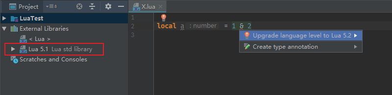

1.2.5 ( 28bea8a )¶
[NEW]新的Region支持，简化输入(Suggestion by @adriweb)


[IMPROVE]为closure和子类重写函数提供参数智能完成


[NEW]新增string代码完成提示功能

[IMPROVE] 为
IDEA2018.2新设计的 Documentation 视图(Suggestion by @dsmgit)
[NEW]新增
@deprecated@author@version@since注解(Suggestion by @dsmgit)
[NEW]泛型支持
@generic注解[NEW]新增 Lua5.4 API (By @dsmgit)
[NEW]新增Lua版本选择项，请在
File | Settings | Languages & Frameworks | EmmyLua中设置，默认为Lua5.3。不同的level对应不同的stdlib和语法
[IMPROVE]Attach debugger 现在可以捕获目标程序使用
OutputDebugString的输出信息[NEW]同时适配
IDEA2017.1,IDEA2017.2-IDEA2018.1,IDEA2018.2[IMPROVE]优化
Remote debugger[IMPROVE]更新
EmmyDoc Tutorial[FIX]bug fix #145 #165 #167 #169 …